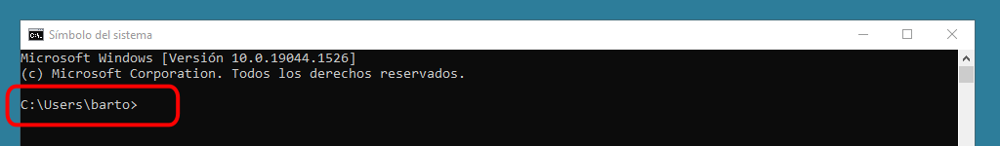
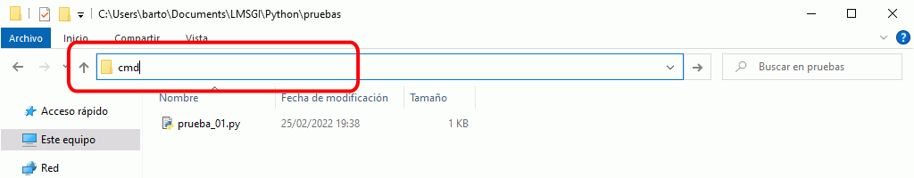

Ejecutar programas en ventana de terminal
Para ejecutar un programa en una ventana de terminal, es necesario estar situado en el directorio en el que se encuentra el programa.
Abrir la ventana de terminal en Windows (CMD o PowerShell)
Puede abrir una ventana de terminal clásico (CMD) de varias maneras, que se muestran a continuación.
- Haga clic en Inicio, escriba cmd y haga clic en alguno de los accesos directos a "Símbolo de sistema".

Se abrirá una ventana de CMD en el directorio del usuario. El inconveniente es que hay que desplazarse con comandos cd hasta el directorio que contiene el programa o ejecutarlo escribiendo su ruta completa.

- Otra opción más interesante porque abre la ventana de terminal directamente en la carpeta en la que se encuentra el programa es la siguiente:
Muestre en el Explorador de archivos de Windows la carpeta que contiene el programa, haga clic a la derecha de la ruta para que se muestre y seleccione el camino absoluto, borre el texto y escriba en su lugar cmd y pulse Intro.



Se abrirá una ventana de CMD en el directorio donde se encuentra el programa.
Puede abrir una ventana de terminal PowerShell de varias maneras, que se muestran a continuación.
- Haga clic en Inicio, escriba powershell y haga clic en alguno de los accesos directos a "Windows PowerShell".
Se abrirá una ventana de PowerShell en el directorio del usuario. El inconveniente es que hay que desplazarse con comandos cd hasta el directorio que contiene el programa o ejecutarlo escribiendo su ruta completa.
- Otra opción más interesante porque abre la ventana de PowerShell directamente en la carpeta en la que se encuentra el programa es la siguiente:
Muestre en el Explorador de archivos de Windows la carpeta que contiene el programa, haga Shift + clic derecho y elija la opción "Abrir la ventana de PowerShell aquí".

Se abrirá una ventana de PowerShell en el directorio donde se encuentra el programa.
Ejecutar el programa
Una vez abierta la ventana de terminal en el directorio en el que se encuentra el programa, puede ejecutar el programa de varias formas. En los ejemplos siguientes, se ejecuta un programa prueba.py en la carpeta pruebas que escribe ¡Hola, mundo! en la pantalla.
- En una ventana de comandos de Windows 7 o Windows 10, puede ejecutar un programa de varias maneras:
- escriba simplemente el nombre del programa:
C:\Users\Barto\Documents\LMSGI Barto\Python\pruebas>prueba.py ¡Hola, mundo! C:\Users\Barto\Documents\LMSGI Barto\Python\pruebas> - escriba py y el nombre del programa:
C:\Users\Barto\Documents\LMSGI Barto\Python\pruebas>py prueba.py ¡Hola, mundo! C:\Users\Barto\Documents\LMSGI Barto\Python\pruebas> - escriba python y el nombre del programa:
C:\Users\Barto\Documents\LMSGI Barto\Python\pruebas>python prueba.py ¡Hola, mundo! C:\Users\Barto\Documents\LMSGI Barto\Python\pruebas>
- escriba simplemente el nombre del programa:
- En una ventana de PowerShell Windows 10, puede ejecutar un programa de varias maneras:
- escriba py y el nombre del programa:
PS C:\Users\Barto\Documents\LMSGI Barto\Python\pruebas>py prueba.py ¡Hola, mundo! PS C:\Users\Barto\Documents\LMSGI Barto\Python\pruebas> - escriba python y el nombre del programa:
PS C:\Users\Barto\Documents\LMSGI Barto\Python\pruebas>python prueba.py ¡Hola, mundo! PS C:\Users\Barto\Documents\LMSGI Barto\Python\pruebas>
- escriba py y el nombre del programa:
Por otro lado, como el instalador de Python registra la extensión .py, puede ejecutar un programa de Python en Windows haciendo doble clic sobre él en el explorador de Windows. El problema es que los programas se ejecutan en una ventana de MS-DOS que se abre al iniciarse el programa y que se cierra cuando el programa termina. Para evitar que los programas terminen, puede añadir una última línea con la función input() que, como se explica en la lección sobre la entrada por teclado, se queda esperando a que pulsemos la tecla Intro. Al pulsar Intro, la ventana se cerrará.
El inconveniente de esta solución es que cuando se ejecuta el programa en IDLE, el programa también se queda esperando que pulsemos Intro y es fácil olvidar hacerlo. Si no pulsamos Intro, al ejecutar un segundo programa, IDLE sigue esperando que pulsemos Intro para el primer programa y da la impresión de no funcionar correctamente. En general, antes de ejecutar un programa, hay que comprobar que en la ventana principal de IDLE el cursor esté visible junto al prompt >>>.